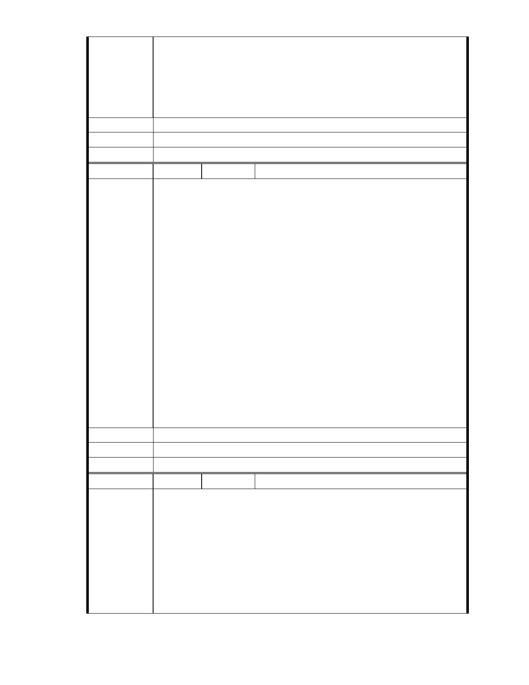

北市都委會訂於 103 年 4 月 10 日星期四下午 2 時假市政大樓 8 樓西南區
委員會議室召開第 657 次大會，將審查台北市內湖慈濟保護區變更案。
由於慈濟不具有發動主計畫變更資格，因此，此案唯有退回，不可審查。
若都委會進行審查並通過主計畫變更的決議，亦屬無效。
建議辦法
市府說明
委 員 會 決 議 同編號 1。
編 號 281 陳情人
MA201404080189
市長好：
陳情理由
山水原本就有他們行走的途徑， 請問政府:保護區的價值與功能,作為國
土保安,水土保持,維護天然資源及保護生態等功能消失了嗎?難道只要是
破壞,而~劣化的保護區,就可以變更蓋水泥大樓嗎?新的土地使用(志工大
樓,社會福利,回收場)真的可以凌駕,優先於,國土保護的價值嗎?以當今氣
候劇烈變遷,災難頻仍,你我,都已親身感受到了, 再怎麼聰明的,,,人為防洪
設施，擋得住洪水回家的路嗎？台北市政府應將遭破壞的保護地,原來就
是大湖的一部份的,這塊濕地,恢復原狀,並且;應積極保育,不應粗略,隨意
的,變更開發才對.願天佑台北 以及台灣所有的生態保護區.
北市都委會訂於 103 年 4 月 10 日星期四下午 2 時假市政大樓 8 樓西南區
委員會議室召開第 657 次大會，將審查台北市內湖慈濟保護區變更案。
由於慈濟不具有發動主計畫變更資格，因此，此案唯有退回，不可審查。
若都委會進行審查並通過主計畫變更的決議，亦屬無效。
建議辦法
市府說明
委 員 會 決 議 同編號 1。
編 號 282 陳情人
MA201404090104
市長好：
慈濟為建蓋國際志工大樓和生態教育園區，選擇於內湖大湖公園旁空地
為建造地點。雖出發點為善，但該區為台北市政府劃設的保護區，更是
陳 情 理 由 地質敏感地帶。希望市長能夠讓我的家園不要變成水鄉澤國。
北市都委會訂於 103 年 4 月 10 日星期四下午 2 時假市政大樓 8 樓西南區
委員會議室召開第 657 次大會，將審查台北市內湖慈濟保護區變更案。
由於慈濟不具有發動主計畫變更資格，因此，此案唯有退回，不可審查。
若都委會進行審查並通過主計畫變更的決議，亦屬無效。
- 322 -